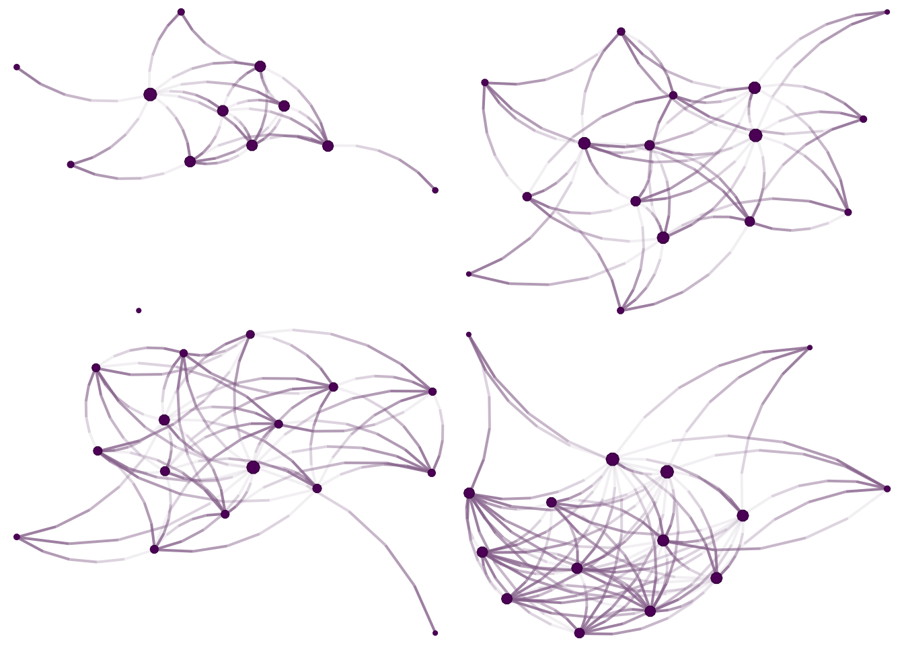
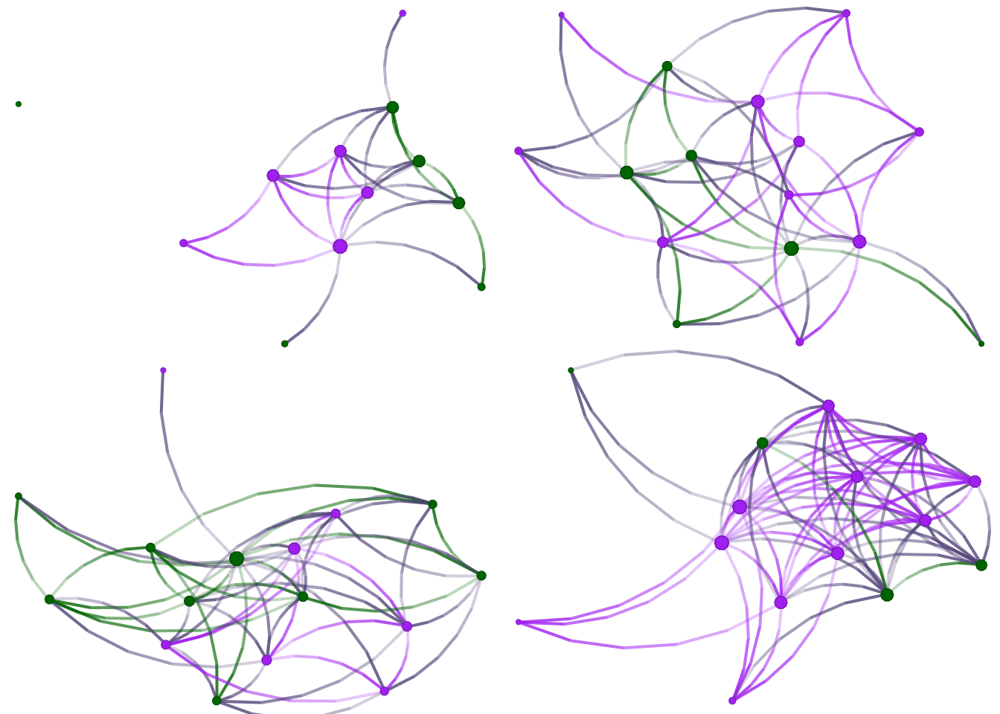

10.1 Network files (graphml)
The graphml files can be read directly with igraph’s read_graph function. The key is to take advantage of R’s lists to avoid writing over and over the same block of code, and instead, manage the data through lists.
Just like any data-reading function, read_graph function requires a file path to the network file. The function we will use to list the required files is list.files():
# We start by loading igraph
library(igraph)
# Listing all the graphml files
graph_files <- list.files(
path = "data-raw/egonets", # Where are these files
pattern = "*.graphml", # Specify a pattern for only listing graphml
full.names = TRUE # And we make sure we use the full name
# (path.) Otherwise, we would only get names.
)
# Taking a look at the first three files we got
graph_files[1:3]
## [1] "data-raw/egonets/I_-59190_BRB9111.graphml"
## [2] "data-raw/egonets/I-100BB_00B95-90.graphml"
## [3] "data-raw/egonets/I-1BB79950-0-7.graphml"
# Applying igraph's read_graph
graphs <- lapply(
X = graph_files, # List of files to read
FUN = read_graph, # The function to apply
format = "graphml" # Argument passed to read_graph
)If the operation succeeded, then the previous code block should generate a list of igraph objects named graphs. Let’s take a peek at the first two:
graphs[[1]]
## IGRAPH 0bd61e1 U--- 12 25 --
## + attr: age (v/n), healthy_diet (v/n), gender_1 (v/l), eat_with_2
## | (v/l), id (v/c)
## + edges from 0bd61e1:
## [1] 1-- 3 1-- 2 1-- 6 1-- 5 1-- 4 1-- 8 1--11 1--10 2-- 3 3-- 7 3-- 4 3-- 5
## [13] 3-- 6 2-- 7 2-- 4 2-- 5 2-- 6 5-- 6 6--10 7-- 9 4-- 5 5-- 7 4--11 6-- 7
## [25] 4-- 7
graphs[[2]]
## IGRAPH 60af7c6 U--- 16 47 --
## + attr: age (v/n), healthy_diet (v/n), gender_1 (v/l), eat_with_2
## | (v/l), id (v/c)
## + edges from 60af7c6:
## [1] 7--13 1-- 5 1-- 6 1-- 4 1-- 2 7--15 1-- 3 11--13 1--10 1--16
## [11] 4-- 6 2-- 6 6-- 7 1--11 11--15 6-- 9 6-- 8 3-- 9 5--15 4-- 5
## [21] 2-- 5 5-- 8 5-- 7 5--10 3-- 5 6--14 12--13 6--13 3--13 2-- 3
## [31] 3-- 4 3--16 3--11 10--14 7--14 2-- 4 2--10 2--15 10--12 4-- 7
## [41] 6--10 5--11 9--10 1-- 9 1--12 3--12 4--14As always, one of the first things we do with networks is visualize them. We will use the netplot R package (by yours truly) to draw the figures:
library(netplot)
library(gridExtra)
# Graph layout is random
set.seed(1231)
# The grid.arrange allows putting multiple netplot graphs into the same page
grid.arrange(
nplot(graphs[[1]]),
nplot(graphs[[2]]),
nplot(graphs[[3]]),
nplot(graphs[[4]]),
ncol = 2, nrow = 2
)
Great! Since nodes in our network have features, we can add a little bit of color. We will use the eat_with_2 variable, which is coded as TRUE or FALSE. Vertex colors can be specified using the vertex.color argument of the nplot function. In our case, we will specify colors passing a vector of length equal to the number of nodes in the graph. Furthermore, since we will be doing this multiple times, it is worthwhile writing a function:
# A function to color by the eat with variable
color_it <- function(net) {
# Coding eat_with_2 to be 1 (FALSE) or 2 (TRUE)
eatswith <- V(net)$eat_with_2
# Subsetting the color
ifelse(eatswith, "purple", "darkgreen")
}This function takes two arguments: a network and a vector of two colors. Vertex attributes in igraph can be accessed through the V(...)$... function. For this example, to access the attribute eat_with_2 in the network net, we type V(net)$eat_with_2. Finally, individuals who have eat_with_2 equal to true will be colored purple, otherwise, if equal to FALSE, will be colored darkgreen. Before plotting the networks, let’s see what we get when we access the eat_with_2 attribute in the first graph:
A logical vector. Now let’s redraw the figures:
grid.arrange(
nplot(graphs[[1]], vertex.color = color_it(graphs[[1]])),
nplot(graphs[[2]], vertex.color = color_it(graphs[[2]])),
nplot(graphs[[3]], vertex.color = color_it(graphs[[3]])),
nplot(graphs[[4]], vertex.color = color_it(graphs[[4]])),
ncol = 2, nrow = 2
)
Since most of the time, we will be dealing with a large number of egonets, you may want to draw each network independently; the following code-block does exactly that. First, if needed, will create a folder to store the networks. Then, using the lapply function, it will use netplot::nplot() to draw the networks, add a legend, and save the graph as .../graphml_[number].png, where [number] will go from 01 to the total number of networks in graphs.
if (!dir.exists("egonets/figs/egonets"))
dir.create("egonets/figs/egonets", recursive = TRUE)
lapply(seq_along(graphs), function(i) {
# Creating the device
png(sprintf("egonets/figs/egonets/graphml_%02i.png", i))
# Drawing the plot
p <- nplot(
graphs[[i]],
vertex.color = color_it(graphs[[i]])
)
# Adding a legend
p <- nplot_legend(
p,
labels = c("eats with: FALSE", "eats with: TRUE"),
pch = 21,
packgrob.args = list(side = "bottom"),
gp = gpar(
fill = c("darkgreen", "purple")
),
ncol = 2
)
print(p)
# Closing the device
dev.off()
})